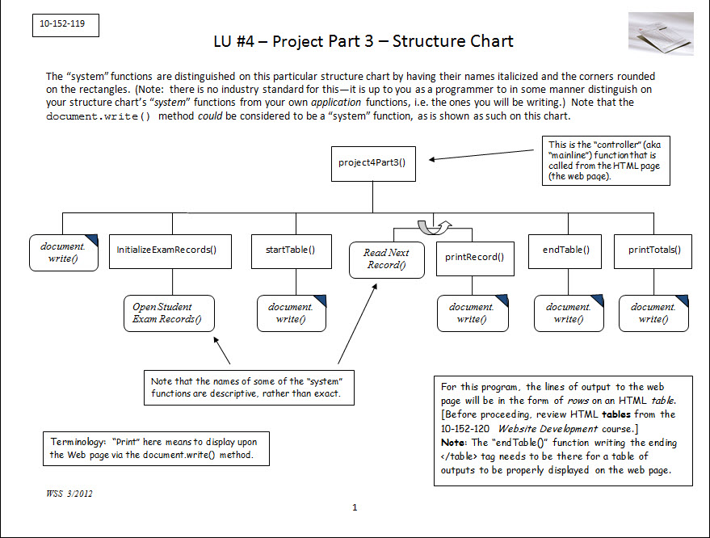

Optional Structure Chart

Suggested Functions
The program will use global variables for the Student Exam Records record set, the fields in the record set, and counters.
- Function
part03()- Output a heading that says A Exams .
- Initialize the exam records by calling the
initializeExamRecords()function. - Call the
startTable()function to begin the HTML table. - Loop through the Student Exam Records. For each record with a score greater than or equal to 90, output the record by calling the
printRecord()function. Note: The loop is located right in the controller function. This loop is a major feature of the program, and belongs right in the controller function. - After the loop has finished, call the
endTable()function to end the HTML Table. - As the final activity, call the
printTotals()function to place the totals beneath the table.
- Function
initializeExamRecords()- This function will open the Student Exam Records.
- Function
startTable()- This function will output a beginning HTML table tag and a table header row. The header row will contain two table header tags, one with the content, “Student Name”, and other with, “Exam Score”.
- Function
printRecord()- This function will output a Student Exam Record. It must output a full HTML row with two table data tags. The first data tag will contain the student name and the second will contain the exam score.
- Function
endTable()- This function will output an HTML table end tag.
- Function
printTotals()- This function will output the totals beneath the table.